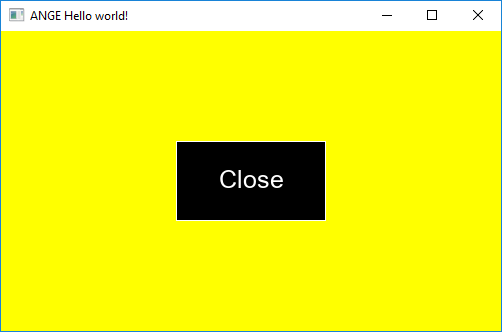
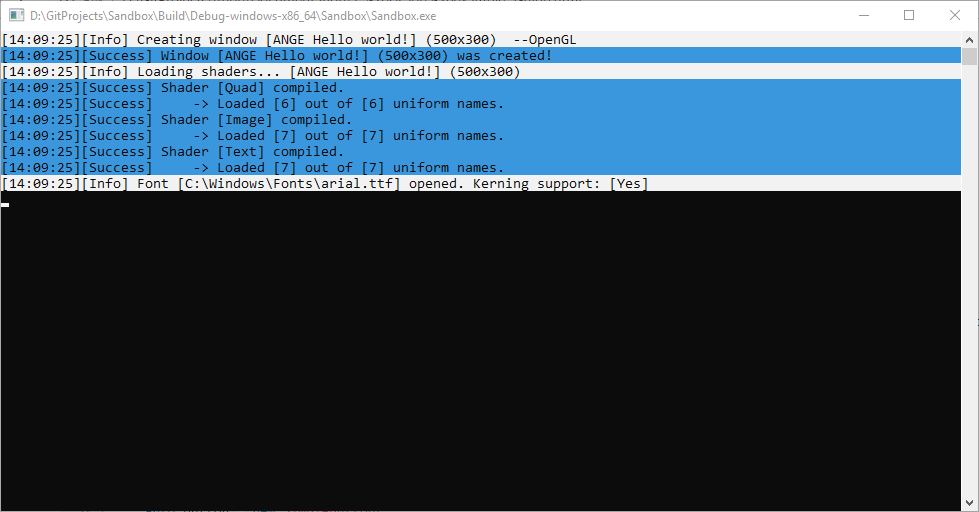

1. Usage example.
Basic usage
Below is the self-explanatory code that creates a window with a button in the middle which closes the applications.
#include "Ange.h"
using namespace Ange;
int main()
{
//Create window
auto window = new Window(
nullptr,
"ANGE Hello world!",
{ {300,200}, {500,300}, WindowFlags::ChildAutoOperate | WindowFlags::AutoInvokeRender | WindowFlags::FifoDrawable }
);
window->Init();
window->SetMinMaxDimensions(500, 300, -1, -1);
window->SetClearColor(Color{ 230,233,240,255 });
//Load font
auto font = new Font("arial.ttf");
font->LoadFontSize(15); //This size is used in default theme
//Create theme & attatch font to it
Theme theme = DefTheme;
theme.AssignFontToAll(font);
//Create button
auto button = new SimpleButton(
window,
{ {250,150}, {150, 80}, Anchor::HorizontalCenter | Anchor::VerticalCenter },
theme,
L"Close"
);
button->SetResizeProportions(50, 50, 0, 0);
//Setup callback
button->SetCallback([&window](Event* ev)->bool{
if(ev->GetEventType() == EventType::MouseClick) window->Close();
return false;
});
//Main loop
while (window->Operate())
{
//We can also use pooling technique instead of relying on callback for button.
//if (button->GetState() == WidgetMouseState::Press) window->Close();
//Notice: No need to invoke "button->Render()" when parent window have WindowFlags::AutoInvokeRender flag set.
window->ClearScene();
}
delete button;
delete font;
delete window;
return 0;
}
After compiling the code, the following application should appear to our eyes:

Additionally, in the application console, we should see the engine logs, as in the picture below:
